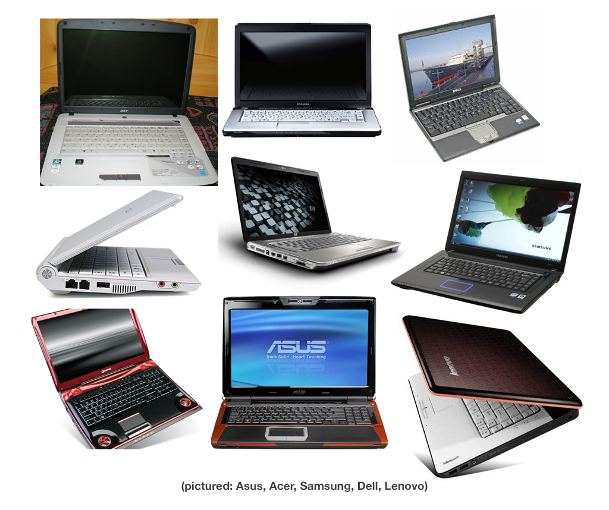
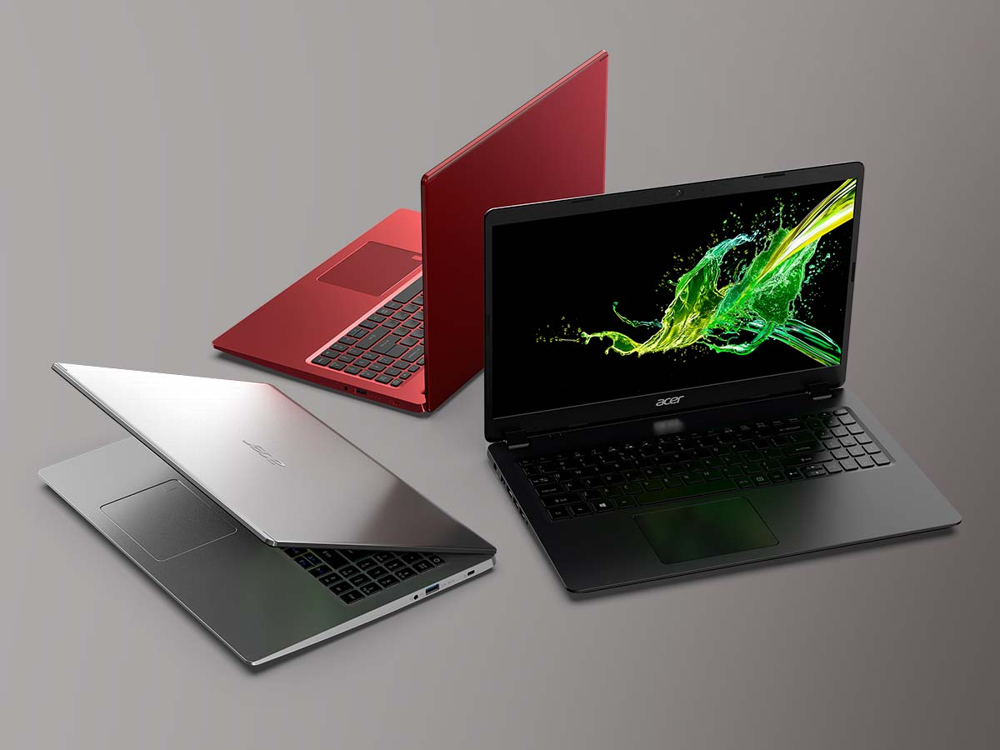

Hp
Hewlett-Packard Fue fundada el 1 de enero de 1939 por dos ingenieros de la universidad de Stanford. Hasta el día de hoy, se trata de una marca con una gran experiencia, habiéndose labrado un nombre inimitable dentro del mundo de la informática. Así pues, hacerse con ordenadores portátiles HP es sinónimo de apostar por una marca plenamente fiable y de calidad. Respecto al diseño, los ordenadores portátiles HP son clásicos y resistentes. El sistema operativo integrado en los dispositivos electrónicos de HP es el sistema Windows, compatible con la gran mayoría de los dispositivos que se pueden encontrar en el mercado actualmente. HP es una marca de dispositivos electrónicos que busca continuamente la innovación en todos sus campos. Por todo esto, se puede observar que HP invierte cifras astronómicas en investigación y desarrollo. portatiles más vendidos son HP Pavilion 360, HP 15 Db. Sobre todo, en lo que guarda relación con los aspectos técnicos que tanta relevancia adquieren al tratar con portátiles: CPU, RAM, gráficas… También tiene un compromiso con el medio ambiente que se extiende en varios frentes, como el reciclado de cartuchos, la eficiencia energética y el gasto de papel. Se trata de una empresa de gama alta. Poseen un rango de precios distinto según el modelo y las características del dispositivo, aunque ajustado a la calidad del dispositivo. La empresa estadounidense ofrece sus productos a todo tipo de consumidores. Tengas la edad que tengas, e independientemente de tu género, no tendrás problemas para encontrar un portátil HP que se ajuste a tus necesidades. VENTAJAS Materiales muy buenos Compromiso medio ambiente, Innovación, Alta reputación. INCONVENIENTES Precio Elevado.
Acer
| ¿QUÉ ES? | Fundada en 1981, empresa Taiwanesa fabricante de laptops y productos informáticos. Es el cuarto mayor fabricante de ordenadores a nivel mundial. Acer está comprometido con el medio ambiente, tratando que sus procesos productivos sean lo menos dañinos y perjudiciales para el medio ambiente. Asimismo, dispone de notebooks, ligeros y óptimos para llevar de viaje o para transportarlos con facilidad. Acer no se ha querido quedar atrás y también ha sacado su propia gama de portátiles 2 en 1. Por otro lado, esta marca, cuenta con una amplia gama de portátiles Gaming |  |
|---|---|---|
| portatiles más vendidos son Acer Chromebook y Acer Aspire 3 | ||
| Un punto débil puede ser el peso, pues no es algo que destaque especialmente en Acer, a pesar de tener portátiles muy ligeros, la media en peso de sus portátiles es elevada. Siempre integra procesadores Intel Core y la calidad de sus tarjetas gráficas es más que aceptable. Su innovación es notable, aunque sitúa unos precios por debajo de la media, posicionándose como una marca de gran relación calidad precio. | ||
ventajas |
Excelengte calidad precio |
|
Buenos materiales |
||
Dispone de portátiles convertibles |
||
| inconvenientes | Diseño mejorable | |